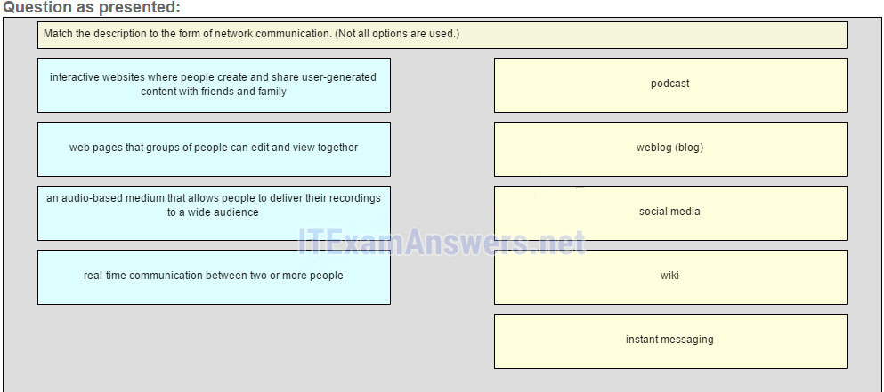
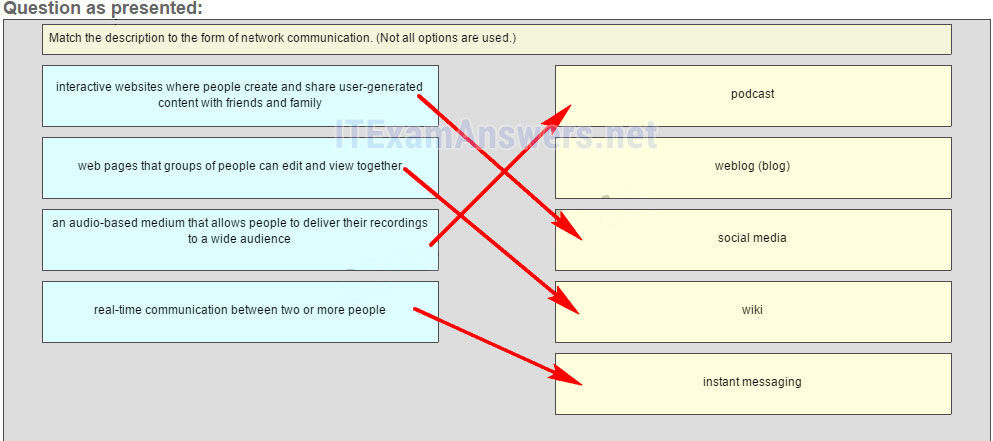
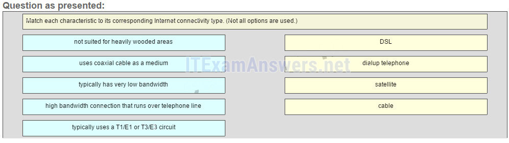
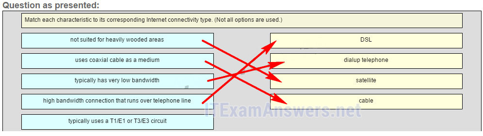
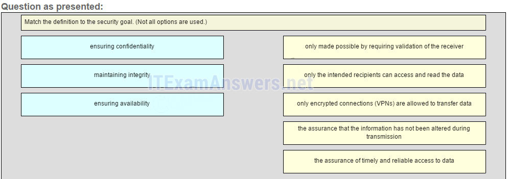
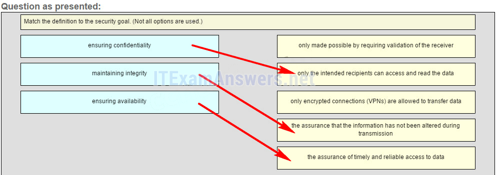

1.Una empresa está considerando si usar un cliente / servidor o una red de igual a igual. ¿Cuáles son las tres características de una red peer-to-peer? (Elige tres.)
- mejor seguridad
- fácil de crear *
- carece de administracion centralizada *
- menos costo de implementación *
- @javi__super
Explique:
como
los dispositivos de red y los servidores dedicados no son necesarios, las redes peer-to-peer son fáciles de crear, menos complejas y tienen menores costos. Las redes de igual a igual tampoco tienen una administración centralizada. Son menos seguros, no escalables, y los dispositivos que actúan como cliente y servidor pueden funcionar más lentamente.
2.¿Qué dispositivo realiza la función de determinar la ruta que deben tomar los mensajes a través de las redes internas?
- un enrutador *
- un firewall
- un servidor web
- un modem DSL
- @javi__super
Explique:
se usa un enrutador para determinar la ruta que los mensajes deben tomar a través de la red. Un firewall se utiliza para filtrar el tráfico entrante y saliente. Un módem DSL se utiliza para proporcionar conexión a Internet para un hogar u organización.
3.¿Qué dos criterios se utilizan para ayudar a seleccionar un medio de red de varios medios de red? (Escoge dos.)
- Los tipos de datos que necesitan ser priorizados.
- El costo de los dispositivos finales utilizados en la red.
- la distancia que el medio seleccionado puede llevar con éxito una señal *
- el entorno donde se instalará el medio seleccionado *
- @javi__super
Explicación:
los criterios para elegir un medio de red son la distancia a la que el medio seleccionado puede transportar una señal, el entorno en el que se va a instalar el medio seleccionado, la cantidad de datos y la velocidad a la que deben transmitirse los datos, y el costo Del medio y su instalación.
4.¿Qué dos afirmaciones describen los dispositivos intermediarios? (Escoge dos.)
- Los dispositivos intermediarios dirigen la ruta de los datos. *
- Los dispositivos intermediarios conectan hosts individuales a la red. *
- Los dispositivos intermediarios inician el proceso de encapsulación.
- Los dispositivos intermediarios alteran el contenido de los datos.
- @javi__super
Explique:
las aplicaciones en dispositivos finales generan datos, modifican el contenido de los datos y son responsables de iniciar el proceso de encapsulación.
5.¿Cuáles son las dos funciones de los dispositivos finales en una red? (Escoge dos.)
- Ellos originan los datos que fluyen a través de la red. *
- Son la interfaz entre los humanos y la red de comunicación. *
- Proporcionan el canal a través del cual viaja el mensaje de red.
- Dirigen datos a través de rutas alternativas en caso de fallas en el enlace.
- @javi__super
Explique:
Los
dispositivos finales originan los datos que fluyen a través de la red. Los dispositivos intermediarios dirigen los datos a través de rutas alternativas en caso de fallas en el enlace y filtran el flujo de datos para mejorar la seguridad. Los medios de red proporcionan el canal a través del cual viajan los mensajes de red.
6.¿Qué área de la red probablemente tendría que rediseñar el personal de TI de una universidad como resultado directo de que muchos estudiantes traigan sus propias tabletas y teléfonos inteligentes a la escuela para acceder a los recursos de la escuela?
- LAN inalámbrico *
- LAN cableada
- WAN inalámbrica
- extranet
- @javi__super
Explique:
una extranet es un área de red donde personas o socios corporativos externos a la empresa acceden a los datos. Una intranet simplemente describe el área de red a la que normalmente se accede solo por personal interno. La LAN alámbrica se ve afectada por los BYOD (traiga sus propios dispositivos) cuando los dispositivos se conectan a la red alámbrica. Una tableta LAN y un teléfono inteligente suelen utilizar una LAN inalámbrica de la universidad. Es más probable que los estudiantes universitarios utilicen una WAN inalámbrica para acceder a su red de proveedores celulares.
7.Un empleado de una sucursal está creando una cotización para un cliente. Para hacer esto, el empleado necesita acceder a información confidencial de precios desde servidores internos en la oficina central. ¿A qué tipo de red accederían los empleados?
- una intranet *
- La Internet
- una extranet
- una red de área local
- @javi__super
Explique:
Intranet es un término usado para referirse a una conexión privada de LAN y WAN que pertenece a una organización. Una intranet está diseñada para ser accesible solo por los miembros de la organización, empleados u otros con autorización.
8.¿Qué dos opciones de conexión proporcionan una conexión a Internet de gran ancho de banda siempre activa a las computadoras en una oficina en casa? (Escoge dos.)
- celular
- DSL *
- cable *
- telefono
- @javi__super
Explicación:
tanto el
cable como el DSL proporcionan un alto ancho de banda, una conexión siempre conectada y una conexión Ethernet a una computadora host o LAN.
9.¿Qué dos opciones de conexión a Internet no requieren la instalación de cables físicos en el edificio? (Escoge dos.)
- DSL
- celular *
- satélite *
- marcar
- @javi__super
Explique:
la conectividad celular requiere el uso de la red de telefonía celular. La conectividad satelital se usa a menudo cuando el cableado físico no está disponible fuera de la casa o el negocio.
10.¿Qué término describe el estado de una red cuando la demanda de los recursos de la red excede la capacidad disponible?
- convergencia
- congestión *
- mejoramiento
- sincronización
- @javi__super
Explique:
cuando la demanda de los recursos de la red excede la capacidad disponible, la red se congestiona. Una red convergente está diseñada para ofrecer múltiples tipos de comunicación, como datos, video y servicios de voz, utilizando la misma infraestructura de red.
11.¿Qué expresión define con precisión el término ancho de banda?
- un método para limitar el impacto de una falla de hardware o software en la red
- una medida de la capacidad de carga de datos de los medios de comunicación *
- Un estado donde la demanda de los recursos de la red excede la capacidad disponible.
- Un conjunto de técnicas para gestionar la utilización de los recursos de la red.
- @javi__super
Explique:
un método para limitar el impacto de una falla de hardware o software es la tolerancia a fallas. Una medida de la capacidad de carga de datos es el ancho de banda. Un conjunto de técnicas para administrar la utilización de los recursos de la red es QoS. Un estado donde la demanda en los recursos de la red excede la capacidad disponible se llama congestión.
12.¿Qué tendencia de redes implica el uso de herramientas y dispositivos personales para acceder a los recursos en una red empresarial o de campus?
- video conferencia
- computación en la nube
- BYOD *
- red eléctrica
- @javi__super
Explique:
BYOD, o traiga su propio dispositivo, es una tendencia en redes donde los usuarios pueden usar dispositivos y herramientas personales en redes de negocios y campus.
13.¿Cuál es una característica de una red convergente?
- proporciona solo una ruta entre el origen y el destino de un mensaje
- limita el impacto de una falla al minimizar el número de dispositivos afectados
- entrega datos, voz y video a través de la misma infraestructura de red *
- Una red convergente requiere una infraestructura de red separada para cada tipo de tecnología de comunicación
- @javi__super
Explique:
una red convergente es aquella en la que múltiples tecnologías, como datos, teléfono y video, se entregan en la misma infraestructura de red.
14.¿Qué enunciado describe una característica de la computación en nube?
- Una empresa puede conectarse directamente a Internet sin el uso de un ISP.
- Los usuarios individuales o las empresas pueden acceder a las aplicaciones a través de Internet desde cualquier dispositivo, en cualquier parte del mundo. *
- Los dispositivos pueden conectarse a Internet a través del cableado eléctrico existente.
- Se requiere inversión en nueva infraestructura para acceder a la nube.
- @javi__super
Explique:
la computación en la nube les permite a los usuarios acceder a aplicaciones, hacer copias de seguridad y almacenar archivos, y realizar tareas sin necesidad de software o servidores adicionales. Los usuarios de la nube acceden a los recursos a través de servicios de suscripción o de pago por uso, en tiempo real, utilizando nada más que un navegador web.
15.¿Qué afirmación describe el uso de la tecnología de red de línea eléctrica?
- El nuevo cableado eléctrico "inteligente" se usa para extender una LAN doméstica existente.
- Una LAN doméstica se instala sin el uso de cables físicos.
- Un dispositivo se conecta a una LAN doméstica existente mediante un adaptador y un tomacorriente eléctrico existente. *
- Los puntos de acceso inalámbrico utilizan adaptadores de línea eléctrica para distribuir datos a través de la LAN doméstica.
- @javi__super
Explique:
la
red de Powerline agrega la capacidad de conectar un dispositivo a la red mediante un adaptador dondequiera que haya un tomacorriente. La red utiliza el cableado eléctrico existente para enviar datos. No reemplaza el cableado físico, pero puede agregar funcionalidad en lugares donde los puntos de acceso inalámbrico no se pueden usar o los dispositivos no se pueden usar.
16.¿Qué violación de seguridad causaría la mayor cantidad de daño a la vida de un usuario doméstico?
- denegación de servicio a su servidor de correo electrónico
- Replicación de gusanos y virus en tu computadora.
- Captura de datos personales que conduce al robo de identidad *
- spyware que conduce a correos electrónicos no deseados
- @javi__super
Explique:
en una PC personal, la denegación de servicio a servidores, gusanos y virus, y el software espía que produce correos electrónicos no deseados pueden ser molestos, invasivos y frustrantes. Sin embargo, el robo de identidad puede ser devastador y alterar la vida. Se deben implementar soluciones de seguridad en todos los dispositivos personales para protegerse contra este tipo de amenaza.
17.Un usuario está implementando la seguridad en una red de oficina pequeña. ¿Qué dos acciones proporcionarían los requisitos mínimos de seguridad para esta red? (Escoge dos.)
- implementando un firewall *
- instalando software antivirus *
- Implementando un sistema de detección de intrusos.
- añadiendo un dispositivo dedicado de prevención de intrusiones
- @javi__super
Explique:
las medidas de seguridad técnicamente complejas, como la prevención de intrusos y los sistemas de prevención de intrusos, generalmente se asocian con redes comerciales en lugar de redes domésticas. La instalación de software antivirus, software antimalware e implementación de un firewall serán los requisitos mínimos para las redes domésticas. La instalación de una red inalámbrica doméstica no mejorará la seguridad de la red y requerirá que se tomen más medidas de seguridad.
18.Rellena el espacio en blanco.
- Una red convergente * es capaz de entregar voz, video, texto y gráficos a través de los mismos canales de comunicación.
- @javi__super
Explicación:
cuando se utiliza una red para todos los tipos de comunicación, como voz, video, texto y gráficos, la red se conoce como una red convergente.
19.Rellena el espacio en blanco.
- El acrónimo byod * refiere a la política que permite a los empleados usar sus dispositivos personales en la oficina de negocios para acceder a la red y otros recursos.
- @javi__super
20.¿Cuáles son las dos funciones de los dispositivos intermediarios en una red? (Escoge dos.)
- Son la fuente principal y los proveedores de información y servicios para los dispositivos finales.
- Ejecutan aplicaciones que apoyan la colaboración para los negocios.
Filtran el flujo de datos, según la configuración de seguridad. * - Dirigen datos a lo largo de rutas alternativas cuando hay un fallo de enlace. *
- @javi__super
21.Haga coincidir la descripción con la forma de comunicación de red. (No se utilizan todas las opciones.
- Pregunta 
- Respuesta 
- @javi__super
22.Coloque las opciones en el siguiente orden:
- la conexión de alto ancho de banda que se ejecuta a través de la línea telefónica -> 1 generalmente tiene un ancho de banda muy bajo -> 2 no es adecuado para áreas muy boscosas -> 3 usa cable coaxial como medio - > 4  
- @javi__super
23.¿Que es la Internet?
- Es una red basada en tecnología Ethernet.
- Proporciona acceso a la red para dispositivos móviles.
- Proporciona conexiones a través de redes globales interconectadas. *
- Es una red privada para una organización con conexiones LAN y WAN.
- @javi__super
Explique:
Internet proporciona conexiones globales que permiten a los dispositivos en red (estaciones de trabajo y dispositivos móviles) con diferentes tecnologías de red, como Ethernet, DSL / cable y conexiones en serie, para comunicarse. Una red privada para una organización con conexiones LAN y WAN es una intranet.
24.Empareja la definición con el objetivo de seguridad. (No se utilizan todas las opciones).
- Pregunta 
- Respuesta 
- @javi__super garantizar la confidencialidad -> solo los destinatarios deseados pueden acceder y leer los datos manteniendo la integridad -> la garantía de que la información no se ha modificado durante la transmisión, lo que garantiza la disponibilidad -> la garantía de un acceso oportuno y confiable a los datos
Explique:
La integridad de los datos verifica que los datos no se hayan alterado en el viaje entre el remitente y el receptor. Un campo calculado por el remitente se recalcula y verifica que sea el mismo por el receptor. Las contraseñas y la autorización mantienen el control sobre quién tiene acceso a los datos personales. Los dispositivos y enlaces redundantes intentan proporcionar un 99,999% de disponibilidad a los usuarios. La integridad se hace posible al requerir la validación del remitente, no del destino. Las VPN no son el único método seguro mediante el cual los datos se pueden transferir de manera confidencial.
25.¿A qué tipo de red debe acceder un usuario doméstico para hacer compras en línea?
- La Internet *
- una intranet
- una extranet
- una red de área local
- @javi__super
26.¿Qué tipo de tráfico de red requiere QoS?
- correo electrónico
- compras en línea
- videoconferencia *
- wifi
- @javi__super
27.Un administrador de red está implementando una política que requiere contraseñas seguras y complejas. ¿Qué objetivo de protección de datos apoya esta política?
- integridad de los datos
- calidad de datos
- confidencialidad de los datos *
- redundancia de datos
- @javi__super
28.Consulte la presentación. ¿Qué conjunto de dispositivos contiene solo dispositivos intermediarios?
- A, B, D, G *
- A, B, E, F,
- G, H, I, J
- @javi__super

29.¿Qué dos afirmaciones sobre la relación entre LAN y WAN son verdaderas? (Escoge dos.)
- Tanto las LAN como las WAN conectan los dispositivos finales.
- Las WAN conectan las LAN a un ancho de banda de velocidad menor que las LAN conectan sus dispositivos finales internos. *
- Las WAN normalmente se operan a través de múltiples ISP, pero las LAN suelen ser operadas por organizaciones individuales o por individuos. *
- Las WAN deben ser de propiedad pública, pero las LAN pueden ser propiedad de entidades públicas o privadas.
- @javi__super
30.¿Qué dos soluciones de Internet proporcionan una conexión de gran ancho de banda siempre activa a las computadoras en una LAN? (Elija dos). ¿Qué dos soluciones de Internet proporcionan una conexión de alto ancho de banda siempre activa a las computadoras en una LAN? (Escoge dos.)
- celular
- DSL *
- satélite
- cable *
- @javi__super
31.¿Qué descripción define correctamente una red convergente?
- un solo canal de red capaz de entregar múltiples formas de comunicación *
- una red que permite a los usuarios interactuar directamente entre sí a través de múltiples canales
- Una red dedicada con canales separados para servicios de video y voz.
- Una red que se limita al intercambio de información basada en caracteres.
- @javi__super
32.¿Qué enunciado describe una red que admite QoS?
- La menor cantidad de dispositivos posibles se ven afectados por una falla.
- La red debe poder expandirse para mantenerse al día con la demanda de los usuarios.
- La red proporciona niveles predecibles de servicio a diferentes tipos de tráfico. *
- Los datos enviados a través de la red no se modifican en la transmisión.
- @javi__super
33.¿Cuál es una característica de las redes de conmutación de circuitos?
- Si todos los circuitos están ocupados, no se puede realizar una nueva llamada. *
- Si un circuito falla, la llamada se reenviará en una nueva ruta.
- Las redes de conmutación de circuitos pueden aprender y usar dinámicamente circuitos redundantes.
- Un solo mensaje se puede dividir en múltiples bloques de mensajes que se transmiten a través de múltiples circuitos simultáneamente.
- @javi__super
34.¿Qué expresión define con precisión el término congestión?
- un método para limitar el impacto de una falla de hardware o software en la red
- Una medida de la capacidad de transporte de datos de la red.
- un estado donde la demanda en los recursos de la red excede la capacidad disponible *
- Un conjunto de técnicas para gestionar la utilización de los recursos de la red.
- @javi__super
35.¿Qué herramienta proporciona comunicación de video y audio en tiempo real a través de Internet para que las empresas puedan llevar a cabo reuniones corporativas con participantes de varias ubicaciones remotas?
- wiki
- weblog
- Telepresencia *
- Mensajería instantánea
- @javi__super
36.Requerir contraseñas seguras y complejas es una práctica que respalda qué objetivo de seguridad de la red?
- manteniendo la integridad de la comunicación
- asegurando la fiabilidad de acceso
- asegurando la confidencialidad de los datos *
- asegurando redundancia
- @javi__super